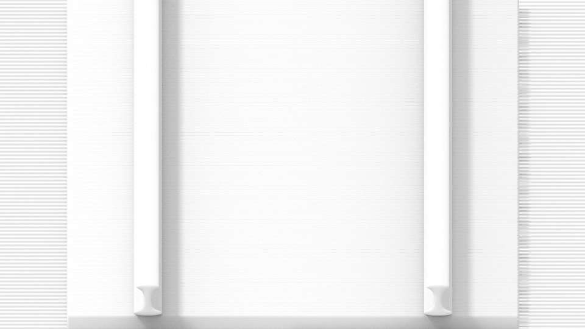

摄像机
相机 是用于在Blender中渲染图像的物体。它定义场景的哪个部分在渲染的图像中可见。
设置相机在渲染中不可见，因此没有任何材质或纹理设置。但是，它们有可用 物体 和 编辑 设置面板，当选定相机时会显示这些面板活动物体。
See also
有关在视口中管理摄像机的文档的 3D视图相机漫游。
属性
参考
- 模式:
物体模式
- 编辑器:
镜头
类型
相机镜头选项控制三维物体在二维图像中的表示方式。
- 透视
这与您在现实世界中查看事物的方式相匹配。距离中的物体看起来比前景中的物体小，并且平行线（例如铁路上的铁轨）看起来会随着它们越来越远而收敛。
- 正交
对于 正交透视 物体，无论距离如何，始终以实际尺寸显示。这意味着平行线看起来是平行的，并且不会产生像透视那样的效果。
 使用与前面示例相同的摄像机角度渲染，但使用正交透视图。
- 正交尺度
这可以控制投影在图像上的物体的外观尺寸。
请注意，这实际上是唯一适用于正交视角的设置。由于平行线不会在正交模式下收敛（没有消失点），因此镜头移位设置相当于在3D视图中平移相机。

- 全景
Panoramic cameras only work in Cycles. See the Cycles panoramic camera settings for more information.
- 移位
允许调整消失点。消失点指的是平行线会聚的位置。在这些渲染示例中，最明显的消失点是在铁路的尽头。

水平镜头偏移 0.330 。

旋转相机物体而不是镜头偏移。
请注意在使用镜头偏移时水平线条如何保持完全水平，但在旋转相机物体时会出现偏斜。
Note
使用镜头偏移相当于渲染一个较大的 FOV 图像，并将其裁剪到偏离中心的位置。


{kind=link}
- 裁剪起始和结束
物体直接可见的间隔，此范围之外的任何物体仍会间接影响图像，因为不会剪切进一步的光反弹。
Note
对于视口渲染，将剪切距离设置为有限值对于确保足够的光栅化精度非常重要。光线跟踪渲染不会受到这个问题的影响，因此可以安全地设置更极端的值。
Tip
当 限制 在 视口显示 面板被启用时，剪切范围将显示为相机视线上的两个黄色连接点。
See also
景深
真实世界的相机通过镜头传输光线，镜头将光束弯曲并聚焦到传感器上。因此，距离一定距离的物体会聚焦，但前后的物体会模糊不清。

成像范围散景效果的示例。
焦点区域称为焦点，可以使用精确值或使用摄像机与所物体之间的距离进行设置：
- 焦点物体
选择用于计算焦点的物体。链接物体后会使焦点距离失效。
- 焦距
Sets the distance to the focal point when no Focus Object is specified. If Limits are enabled, a yellow cross is shown on the camera line of sight at this distance.
Hint
Hover the mouse over the Distance property and press E to use a special Depth Picker. Then click on a point in the 3D Viewport to sample the distance from that point to the camera.
光圈
- 光圈级数
光圈数值比率定义模糊量。较低的值会产生强烈的景深效果。
- 叶片
用于改变渲染中模糊物体形状的多边形刀片总数，以及渲染预览。与视口一样，启用散景效果的最小刀片数量为3，导致三角形模糊。
- 旋转
沿着面对轴旋转多边形刀片，并以顺时针和逆时针方式旋转。
- 比率
更改失真量以模拟变形散景效果。设置为1.0表示没有失真，低于1.0的数字将导致水平失真，数字越大则导致垂直失真。
摄像机
这些设置调整了与物理相机机身有关的属性。可以选择几个 预设 来匹配真实世界的相机。
- 传感器适配
调整相机的传感器在输出尺寸内的配合方式，调整角度视场。
- 尺寸/宽度，高度
相对于修改焦距，这个设置是控制视场的另一种方法。它对于将Blender中的相机与物理相机和镜头的组合相匹配是很有用的，例如，对于 运动追踪。
安全区域
安全区域是用于定位元素的指南，以确保可以在所有屏幕上看到内容的最重要部分。
不同的屏幕有不同数量的过扫描（特别是较旧的电视机）。这意味着并非所有内容都对所有查看者都可见，因为边缘周围的图像部分不会显示。为了解决这个问题，电视制作人定义了两个保证内容显示的区域：动作安全和标题安全。
具有纯数字信号的现代LCD/等离子屏幕没有 过扫描，但安全区域仍被认为是最佳实践，并且可能是广播的法律要求。
在Blender中，可以从相机和序列视图设置安全区域。
{kind=link}
红线：安全操作尺寸。绿线：安全标题图像区域。
安全区域可以通过其外边距来定制，外边距是中心和渲染大小之间的区域的百分比。值在视频序列编辑器和摄像机视图之间共享。
- 字幕安全边距 X/Y
也称为图形安全。将所有重要信息（图形或文本）放在此区域内，以确保大多数观看者都能看到它。
- 动作安全边距 X/Y
确保镜头中的任何重要动作或角色都在此区域内。该区域还可以作为屏幕的一种 "边缘"，可以用来防止元素堆积在边缘上。
Tip
每个局部都设定了广播的法律标准。其中包括安全区域的具体值。安全区域的Blender默认值遵循EBU（欧盟）标准。在广播工作时确保使用正确的值以避免任何麻烦。
中间裁切安全区
中心切割是第二种安全区域，用于确保在具有不同宽高比的屏幕上正确显示内容。旧电视机接收 16:9 或 21:9 视频将切断两侧。将内容放置在中心切割区域内，以确保在这些屏幕中仍然可以看到合成中最重要的元素。
Blender默认值显示 16:9 比率(宽屏)内的 4:3 比率(方形)。

青色线：行动中心安全区域。蓝线：标题中心安全区域。
背景图
在许多情况下，相机中的背景图片非常有用：建模显然是一个，但它在绘画时也很有用（例如，在直接在模型上绘制纹理时可以有面部参考图片……）或动画（使用时）视频作为背景)等.
- 背景图来源
背景图片的来源。
- 图像:
使用外部图像，图像序列，视频文件或生成的纹理。
- 影片剪辑:
使用其中一个电影剪辑数据块。
- 活动剪辑
显示来自场景的 活动剪辑 中的影片剪辑。
- 渲染未畸变代理
如果有的话，使用不扭曲的代理显示背景图像。
- 代理渲染尺寸
选择完全（非代理）显示或代理尺寸来绘制背景图像。
See also
要建立一个代理，必须使用 影片剪辑编辑器代理设置。否则，这里的代理设置没有效果。
- 色彩空间
图像或视频文件在Blender中使用的颜色空间。
- 不透明度
控制背景图像的透明度。
- 深度
选择图像是显示在所有物体后面还是显示在所有物体前面。
- 嵌入方法
控制图像在摄像机视图中的放置方式。
- 拉伸:
强制图像尺寸与相机边界匹配（可能会改变纵横比）。
- 适配:
缩放图像以使其填满整个摄像机视图，且不改变纵横比。
- 裁剪:
缩放图像以使其填满整个摄像机视图，但不会改变纵横比（某些图像将被裁剪）。
- 偏移 X, Y
使用这些偏移定位背景图像。
在正交视图中，这是在正常场景单元中测量的。在摄像机视图中，这是相对于摄像机边界测量的（0.1 将偏移视图宽度/高度的 10%）。
- 旋转
围绕中心旋转图像。
- 比例|缩放
从中心向上或向下缩放图像。
- 翻转
- X
交换图像，使左侧现在在右侧，右侧现在在左侧。
- Y
交换图像，使顶部现在位于底部，底部现在位于顶部。
视图显示

相机视图显示安全区域、传感器和名称。
- 尺寸
3D视图中摄像机可视化的大小。此设置对相机的渲染输出 没有 影响。还可以使用标准变换键 S 缩放相机可视化。
- 显示
- 限制
Shows a line which indicates Start and End Clipping values.
- 雾场
打开或关闭雾限值的查看。极限显示为摄像机视线上的两个相连的白点。迷雾限制和其他选项是在 世界 面板中设置的，位于 雾化章节。
- 传感器
在摄像机视图中显示虚线框。
- 名称
在摄像机视图中打开和关闭名称显示。
构图辅助线
构图辅助线 可以叠加到摄像机显示屏上，在构图时提供帮助。
- 九宫分割
添加垂直和水平分隔三分之一帧的线条。
- 中心
- 中心
添加将框架垂直和水平分成两半的线条。
- 斜纹
添加连接对角的线条。
- 黄金分割
- 比率
将宽度和高度分成黄金比例（框架四周大小约为0.618）。
- 三角形A
显示从左下角到右上角的对角线，然后添加穿过左上角和右下角的垂直线。
- 三角形B
与A相同，但有相反的角落。
- 均衡
- 三角形A
显示从左下角到右上角的对角线，然后是从左上角和右下角的线到0.618相对侧的长度。
- 三角形B
与A相同，但有相反的角落。
- 外边框
这个选项使摄像机视场外的区域变暗。遮挡的不透明度可以用数值滑块来调整。
Tip
If the Passepartout is fully opaque, Blender will make optimizations to speed up the rendering of areas inside the camera view.